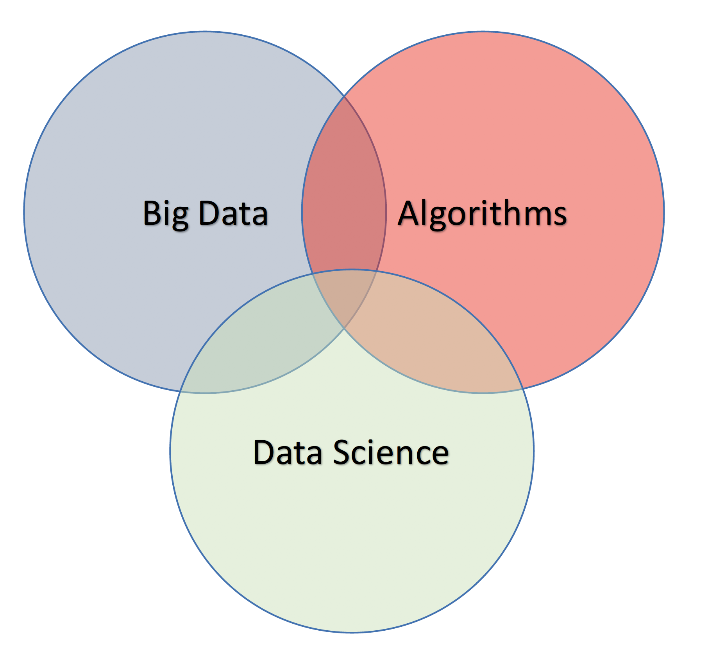
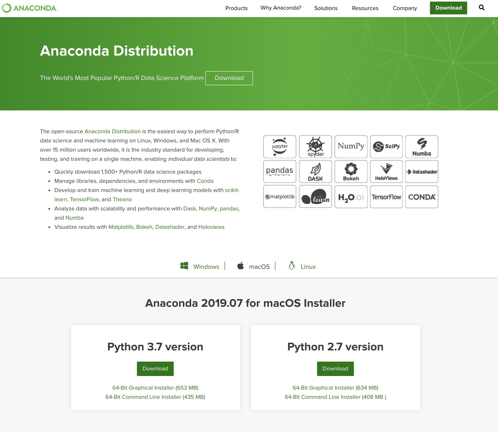

layout: true --- class: center, middle <center></center> # **Taller de Nous Usos de la Informàtica** ## Notes Jordi Vitrià .blue[jordi.vitria@ub.edu] --- class: center, middle, inverse ### https://tnui2019.github.io/ --- class: middle, center, title-slide ## Presentació de l'assignatura --- class: middle # Contactes + Professors de Teoria: + Jordi Vitrià (jordi.vitria@ub.edu) + Professors de Pràctiques: + Guillem Pascual (gpascualg93@gmail.com), + Pablo Laiz (laizpablo@ub.edu) --- class: middle <center></center> --- class: middle **Big data** is the term for a collection of data sets so large and complex that it becomes difficult to process using on-hand database management tools or traditional data processing applications. The challenges include capture, curation, storage. **Data science** incorporates varying elements and builds on techniques and theories from many fields, including mathematics, statistics, data engineering, pattern recognition and learning, advanced computing, visualization, uncertainty modeling, data warehousing, and high performance computing with the goal of extracting meaning from data and creating data products. --- class: middle # Què aprendreu? + Com cercar informació (a la web). + Com anar més enllà de la cerca: el “descobriment” d’informació. + Com processar i analitzar seqüencialment grans volums de dades. + Com dirigir processos d’explotació-exploració. + Com analitzar “xarxes socials”. + Etc. --- ## Què és aquesta assignatura? Aquesta assignatura te per objectiu fer una introducció pràctica als nous usos que la informàtica adopta de forma contínua, des de la intel·ligència col·lectiva a l'anàlisi de xarxes socials. ## Què s’espera dels estudiants matriculats? Els estudiants hauran de participar de forma activa durant les classes de teoria i també hauran de participar en el disseny i desenvolupament d’algunes aplicacions. ## Quins objectius té l’assignatura? Entendre els usos de la informàtica com a barreja de bases algorísmiques i necessitats humanes (personals i socials) + Estudiar les bases algorísmiques que fan possible l’evolució dels usos i analitzar algunes aplicacions + Assentar les bases per generar noves idees i fer projectes innovadors en aquestes àrees. --- class: middle ### Quins llenguatges farem servir? Farem servir un llenguatge (Python) i una sèrie de mòduls (IPython, pandas, matplotlib, numpy, networkx, etc.) que constitueixen un dels entorns més desenvolupats de ciència de dades. ### Com s’organitza l’assignatura? L’assignatura s’imparteix en classes teòriques i classes de pràctiques. L’assignatura es coordinarà mitjançat el Campus Virtual de la UB i GitHub. A través d’aquest entorn tindreu: anuncis, apunts, notes, fòrum, calendari, enllaços a la bibliografia, etc. Poseu-hi una fotografia digital vostre. --- class: middle ### Com seran les classes teòriques (2 hores a la setmana) Les classes es dedicaran a l’exposició del temari teòric de l’assignatura. ### Com seran les classes pràctiques (2 hores presencials a la setmana) Es fan amb l’ajut de les Aules d’Informàtica. Els estudiants s’han d’organitzar en grups de 2 persones. --- class: middle # Com s’avaluarà l’assignatura? L’assignatura seguirà un esquema d’avaluació continuada, amb dos elements principals: proves presencials i lliurament remot de pràctiques. + Lliurament via web de pràctiques (LP): Els professors proposaran una sèrie de pràctiques que hauran de ser lliurats via web per l’alumne dins del període assenyalat pel professor. Cada un dels lliuraments serà avaluat pel professor amb una nota que pot anar de 0 (nota mínima) a 10 (nota màxima). En cas de no lliurar les pràctiques dins del període assenyalat, l’alumne obtindrà un 0. La nota final (LP) de la part de lliurament de pràctiques serà la mitja de tots els lliuraments. + Proves presencials (PP): durant el curs, l’alumne realitzarà varies proves escrites (teòrico-pràctiques) davant del professor. Les proves s’avaluaran amb una nota de 0 (nota mínima) a 10 (nota màxima). La nota final (PP) d’aquesta part serà la mitja de totes les proves realitzades (una prova no realitzada = 0). --- class: middle #Com s’avaluarà l’assignatura? La nota segons l’avaluació continuada (NF) es calcularà de la següent manera: + Si `(LP>4,0 i PP>4,0): NF = PP * 0,5 + LP * 0,5 ` + Sinó, `NF = min(4.0, PP * 0,5 + LP * 0,5)`. Durant la segona prova presencial (Gener) es donarà l’opció de presentar-se de tota l’assignatura o només de la segona part. Tots aquells alumnes que obtinguin una NF>=3,5 tenen dret a una re-avaluació al cap d’un dies de la publicació de NF. En aquests casos, la nota final de l’assignatura serà llavors la nota de la re-avaluació. --- class: middle #Teoria + Presentació de l’assignatura + Recomanadors + El problema dels ítems freqüents + Models Probabilístics + Optimització + A/B Testing + Processament seqüencial de dades + Xarxes Socials + Aprenentatge interactiu + XarxesNeuronals + Visualitzacióde Dades + Dades i Ètica --- class: middle #Pràctiques + Python Avançat (Pandas, Numpy) + Recomanador + Optimizació + Anàlisi de Grafs --- class: middle ##Entorn de treball: Instal·lació Hi ha diverses maneres d’instal·lar l’entorn de treball al vostre ordinador, però n’hi ha una que és extremadament senzilla: `http://continuum.io/downloads` <center></center> --- class: middle ##Python Data Analysis Tools + IPython: entorn de treball. + numpy: mòdul de Python per treballar amb matrius i vectors. + pandas: mòdul de Python per treballar amb taules heterogènies de dades. + scikit learn: mòdul de Python amb algorismes d’aprenentatge. + Matplotlib: mòdul de Python amb algorismes de visualització. + NetworkX: mòdul de Python amb algorismes de processament de grafs. + ... --- class: middle, center, title-slide # Què és al ciència de dades? --- class: center, middle, inverse #### https://github.com/tnui2019/tnui2019.github.io/raw/master/DS.pdf --- class: middle, center, title-slide # Recomanadors --- class: center, middle, inverse #### https://github.com/tnui2019/tnui2019.github.io/raw/master/pdf/REC.pdf --- class: middle, center, title-slide # El problema dels ítems freqüents --- class: center, middle, inverse #### https://github.com/tnui2019/tnui2019.github.io/raw/master/pdf/ITE.pdf --- class: middle, center, title-slide # Models Probabilístics --- class: center, middle, inverse #### https://github.com/tnui2019/tnui2019.github.io/raw/master/pdf/PRO.pdf --- class: middle, center, title-slide # Optimització --- class: center, middle, inverse #### https://github.com/tnui2019/tnui2019.github.io/raw/master/ --- class: middle, center, title-slide # A/B Testing --- class: center, middle, inverse #### https://github.com/tnui2019/tnui2019.github.io/raw/master/pdf/ABT.pdf --- class: middle, center, title-slide # Processament seqüencial de dades --- class: center, middle, inverse #### https://github.com/tnui2019/tnui2019.github.io/raw/master/pdf/STR.pdf --- class: middle, center, title-slide # Xarxes Socials --- class: center, middle, inverse #### https://github.com/tnui2019/tnui2019.github.io/raw/master/pdf/NET.pdf --- class: middle, center, title-slide # Aprenentatge Interactiu --- class: center, middle, inverse #### https://github.com/tnui2019/tnui2019.github.io/raw/master/pdf/BAN.pdf --- class: middle, center, title-slide # XarxesNeuronals --- class: center, middle, inverse #### https://github.com/tnui2019/tnui2019.github.io/raw/master/pdf/ --- class: middle, center, title-slide # Visualitzacióde Dades --- class: center, middle, inverse #### https://github.com/tnui2019/tnui2019.github.io/raw/master/pdf/ --- class: middle, center, title-slide # Dades i Ètica --- class: center, middle, inverse #### https://github.com/tnui2019/tnui2019.github.io/raw/master/pdf/DAD.pdf